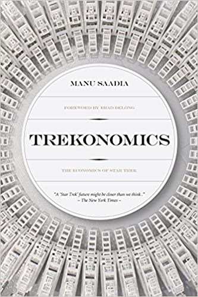

Trekonomics, by Saadia
Thursday April 1, 2021
This is the best book on Star Trek economics that I've read (sorry, Webb). Personal, erudite, and optimistic, it suggests that post-scarcity has started, and that while there's still a long way to go, we can work merrily to advance farther.

"It is almost a paradox to state it this way, but in a society where nothing is scarce and consequently where work is no longer a prerequisite for survival, finding good reasons to work becomes paramount, the defining existential question that everyone has to ask themselves." (pages 44-45)
"For those who can't swing it, the imperative to build a meaningful life through work becomes a source of unbearable anxiety." (page 58)
The RepRap project to make a 3D printer that can print copies of itself is pretty neat!
"As with most open-source projects, what is learned and invented along the way is as valuable as the stated goal." (page 79)
LEAP stands for "Leading Edge Aviation Propulsion."
On page 86 he mentions "Pareto improvement" which refers to a change that helps something and hurts nothing else, which is a neat idea from Pareto efficiency (not to be confused with the Pareto principle). I think a ROC curve should represent a Pareto frontier...
"Empirical data suggests that given enough time, all rival goods are either substituted or become nonrival." (page 100)
The emphasis on reputation as a motivator is interesting. Thinking of modern social media, which is a kind of focus on reputation, it seems like a system with risks. It matters whose opinion you value. If you spend all your time on public reputation management and none on quiet work, for example, reputation may be a distraction rather than a focusing agent.
There's some fairly naive exponential extrapolation of economic productivity to the 24th century... Seems like some discussion of exponential vs. sigmoid might be appropriate...
"Our culture hungers for the cheap thrills of apocalypse." (page 106)
"News of our imminent demise has been greatly exaggerated." (page 107)
Elinor Ostrom, Governing the Commons: The Evolution of Institutions for Collective Action (Cambridge: Cambridge University Press, 1990), p. 183. It is hands-down one of the most important books of the past fifty years."
"Without rules or regulations, be they self-imposed or enforced by an external intrumentality (an agency or a government), overconsumption is almost always guaranteed. Such rules and regulations are extremely hard to devise, and enforcement is very complex." (page 121)
"Thanks to science and political activism, we mustered the power to ban lead in domestic products. However, the public health consequences and the costs borne by society were enormous (including but not limited to widespread disruption of prefrontal cortex development in children, leading to significant increases in violent crime). We let oil and car companies free ride on the back of society. It would have taken much longer to ban lead had it not been for the heroic work of Caltech geochemist Clair Patterson." (page 122)
"Free riding takes place at a myriad of points in the overall system, from individuals to corporations to states. Many private economic actors routinely engage in various forms of legal and illegal tax evasion, weakening the very same public institutions that help and guarantee their business. This is free riding, but on government. The usual self-servicing argument that everybody does it anyway does not make the practice any less craven or repellent. The managers and stockholders of these multinational corporations are perfectly aware that they are breaching the contract between their companies and society as a whole. Basically, they behave no better than Third World dictators who stuff stolen cash in Swiss vaults. Only a residual sense of guilt about the extent of their free riding makes them publicize their paltry philanthropic efforts and their so-called corporate-citizenship initiatives. They operate with the dread of getting caught, and thus aggressively support political parties, economists, and opinion makers who agitate against taxes out of naive philosophical principles. The perverse result is that all too often and in too many countries, the party of the free market, which in truth should defend open society, progress, and civic spirit, ends up as the party of tax evasion, monopoly, and free riding." (page 124)
Saadia recommends Stalker, which is based on Roadside Picnic.
"The Dispossessed specifically makes the case that post-scarcity is not so much a matter of material wealth or natural bounty, but an organizational option for society." (page 143)
"By the time Next Generation rolls around, the conflict between the messy present and the aspirational future has been resolved. Stoicism has won. The Enterprise's new crew is all Spock and no Kirk." (page 172)
Keynes' 1930 Economic Possibilities for our Grandchildren
"Even more pointedly, if we take a step back from Hollywood's romance of space travel, with its gizmos and its aliens, we may soon come to the rather disquieting realization that we already live in Keynes's, and therefore Star Trek's, cornucopia. Economic bliss is just very unevenly distributed, to paraphrase science-fiction author William Gibson." (page 211)
"If you believe that Star Trek is about space travel, you are taking it too literally." (page 215)
"We are an incredibly sedentary species." (page 216)
Alcubierre drive is a specific kind of warp drive.
Economics and the Fermi paradox: Maybe it's just not worth it to go to space.
Dreams of Autarky: Doux commerce for everything.
"In a world where work is no longer compulsary, it must become truly meaningful." (page 223)
"The zero-marginal cost society, as economist and essayist Jeremy Rifkin calls it, is an everyday, practical reality." (page 230)
"While nominally the subject of monetary transactions, everything that matters is as good as free to many of us. When allocation decisions consist in choosing between your new iPhone storage-capacity options or the trim of the car, then you know you have whittled down your ninety-nine problems to the last few marginal ones. For all intents and purposes, and save for a few minor imperfections, the global economy already acts as one massive replicator." (page 232)